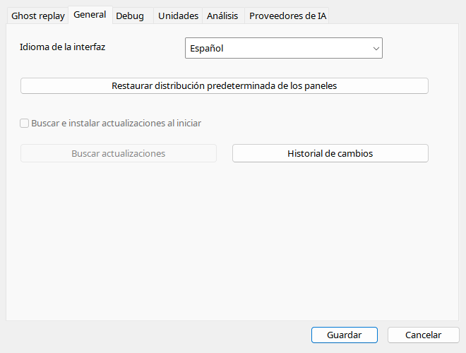

Automático detecta idioma UI Windows y variante regional. La selección manual permanece hasta volver a automático. Idiomas sin manual usan inglés. Las actualizaciones portable están bloqueadas incluso con INI antiguo. Setup solo muestra aviso; reemplace archivos con la aplicación cerrada.
| Opción / acción | Funcionamiento y limitaciones |
|---|---|
| Automático | Idioma UI Windows y variantes regionales, fallback inglés. Selección manual recordada. |
| RTL | Árabe/hebreo afectan interfaz normal, no geometría del cockpit; volver a LTR restaura dirección. |
| Autoactualización | Desactivada en portable; INI no activa updater. Setup solo muestra aviso. |
| Comprobar | También desactivado. Descargue nueva versión manualmente conservando datos. |
| Historial | Polaco con UI polaca, inglés en otro caso; ShowChangeLog abre al iniciar. |
| Diseño predeterminado | Restablece acoplamiento/tamaños, no borra vuelos. |
